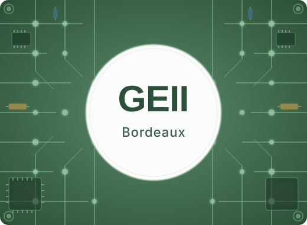
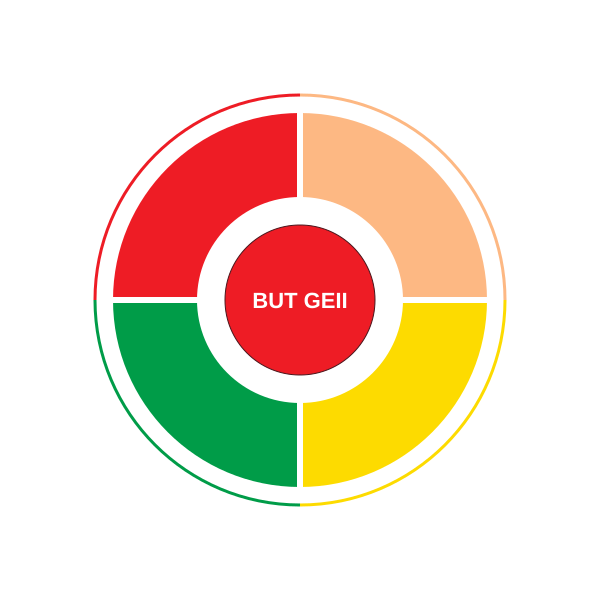

Bienvenue sur mon portfolio. Étudiant en 2ème année de BUT GEII à l'IUT de Bordeaux Gradignan, j'ai conçu cet espace pour retracer mon parcours technique.
Vous trouverez ici une vue d'ensemble de ma Formation, de mes Expériences professionnelles (stages, alternance, CDD), le détail de mes Compétences en électronique et informatique, ainsi que les Projets concrets que j'ai réalisés. Pour en savoir plus sur mon profil, rendez-vous dans la section Contacts.
Ici, je vous détaille mon parcours scolaire depuis le lycée où j'ai commencé à me spécialiser dans les matières scientifiques ainsi que ma formation actuelle en 2ème année à l'IUT de Bordeaux Gradignan.
Je prépare mon BUT en Génie Électrique et Informatique Industrielle en Électronique et système embarqué.
Voir ma formation détaillée

Cette page regroupe l'ensemble de mes savoir-faire techniques, structurés autour des deux piliers de ma formation : Le Génie Électrique et l'Informatique Industrielle.
J'y détaille mes acquis dans des domaines clés tels que l'automatisme, l'électronique de puissance, la régulation et les systèmes embarqués.
Vous y trouverez un inventaire précis des langages de programmation, des environnements de développement et des logiciels de CAO que je maîtrise au quotidien.
Voir mes compétences détailléesDécouvrez mon parcours professionnel au sein de l'entreprise AeroDIODE à Bègles (Stage, CDD et Alternance) dans la production de modules opto-électroniques, ainsi que mes emplois étudiants.
J'y présente mes missions techniques concrètes : soudures CMS, fibres optiques, intégration mécanique et caractérisation sur bancs de test (GBF, oscilloscope, spectromètre).
Voir mes expériences détailléesDécouvrez comment me contacter et téléchargez mon Curriculum Vitae.
Vers mes contacts